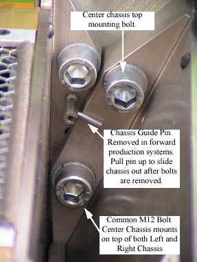

Operating Documentation
Direction 5196839-800, Rev# 6
RT16 and Xtra Service Info Adv
Operating Documentation |
| Required Persons | Preliminary Reqs | Procedure | Finalization |
|---|---|---|---|
| 1 |
The DAS backplane is not a separate FRU; the entire chassis must be replaced. This procedure covers replacement of the left, center, and right chassis.
| Last Revised: | January 5, 2006 |
| Ensure that you are properly grounded by using the appropriate ESD wrist strap and cord connected to a good ground point in the Gantry. | |
Move the table cradle to the home position, and lower the table to its lowest elevation.
Remove gantry right side cover, and turn OFF all three (3) service switches. Remove the rest of the gantry covers.
| POTENTIAL FOR SHOCK | |
| VOLTAGE MAY BE PRESENT. | |
| Use proper lockout/tagout procedures before replacing components. See safety menu of Service Document gui for appropriate procedures. |
Position the bad chassis at 6 O’clock. Shut off system power using appropriate Lockout Tagout procedures.
| CRUSH HAZARD. | |
| UNEXPECTED GANTRY ROTATION CAN CAUSE SERIOUS INJURY. | |
| Never service the gantry with the axial drive enabled. Use the gantry rotation lock to lock out gantry rotation. See safety menu of Service Document gui for appropriate procedures. |
Lock the gantry in position, using the rotational lock.
Refer to “Rotational Locking Pin,” in Equipment Service - Gantry (located in the Safety tab of this publication).
Remove the DAS air plenum, per DAS Air Plenum Removal and Installation.
Put on wrist strap and use good ESD precautions.
Using Detector Handling precautions (verify use of ESD strap, grounding and Nitrile gloves), disconnect Detector flexes from the appropriate backplane. See MDAS/GDAS 16 DDIF Cleaning Procedure for details.
Disconnect the appropriate power cables:
Disconnect the appropriate data cables:
| NOTE: |
Remove the gantry balance trim weights and threaded rod nuts on the front of the detector plate. This is for left and right chassis replacement only.
Loosen Center Chassis top mounting bolt for left or right chassis removal.
Remove four (4) large 12mm cap screws holding the chassis to the Detector Plate, while holding on to the chassis. When the last cap screw is removed, carefully slide the chassis away from under the Center chassis and remove from the Gantry. Place chassis on an ESD pad (to protect converter cards).
Illustration 1: DAS Chassis mounting bolts, between right and center chassis

The center chassis shares one bolt each with the left and right chassis.
When removing the left or right chassis, the second bolt on the shared side of the center chassis must be loosened slightly.
Be careful not to damage detector flexes.
| Ensure that you are properly grounded by using the appropriate ESD wrist strap and cord connected to a good ground point in the Gantry. | |
Carefully place the DAS Chassis in position. Use special care:
Do not smash or otherwise damage Detector flexes
Ensure that ALL Detector flexes are in front of backplane
Secure by using four (4) large 12mm Cap screws, with flat and lock washers. Torque each chassis mounting screw to 49 ft.-lbs (66.4 N-m).
When replacing the left or right chassis, be sure to also tighten the center chassis screw that was loosened for removal.
Connect the appropriate power cables:
Connect Data Cables
Transfer the Converter boards from the replaced chassis to the new chassis.
Confirm ESD practices
Remove Chassis board cover
Remove 1 board at a time and transfer each board from the original chassis to the new chassis in the same board slot location.
Install Detector flexes with your Nitrile glove protected fingers.
Confirm ESD and detector flex handling practices. Use ESD wrist strap and Nitrile gloves.
Interposers and Dust Shields are shipped with each new chassis.
Install chassis board cover.
If the right chassis was replaced, reattach the fiber-optic cable to the transmit (TX) port.
Install threaded rod lock nuts, gantry balance trim weights and torque to 66 N-m (48 lbs-ft).
Install plenum, per “Plenum Installation,” in DAS Air Plenum Removal and Installation.
Return weights to their original sequence and position (if applicable).
Disengage rotational lock.
Restore power.
See Retest Matrix for tests after replacing a DAS Chassis.
Install / Close all covers.
DAS Detector Integration
Perform X-Ray Verification.
Perform FastCal.
Perform Image Quality Test Procedures.
Perform Saving System State.